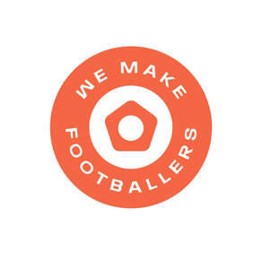
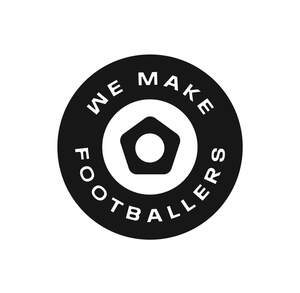

Trade Mark Journal No.2025/034 22 August 2025
UK00004246049 7 August 2025 (9,25,28,35,41)
Mark 1

Mark 2

- Class 9
- Mobile apps; Mobile application software; Application software for mobile phones; Downloadable smart phone application software; Web application software.
- Class 25
- Football jerseys; Football shirts; Soccer shirts; Replica football kits; Sports jerseys; Soccer bibs; Sports jerseys and breeches for sports; Sports shirts; Sport shirts; Athletic uniforms; Sports caps; Sports socks.
- Class 28
- Football equipment; Soccer balls; Footballs.
- Class 35
- Retail services connected with the sale of clothing and clothing accessories; Retail services in relation to clothing accessories; Business assistance relating to starting and running a franchise; Provision of assistance [business] in the establishment of franchises; Administration of the business affairs of franchises; Assistance in business management within the framework of a franchise contract; Business assistance relating to the establishment of franchises; Provision of assistance [business] in the operation of franchises; Advice in the running of establishments as franchises; Assistance in product commercialization, within the framework of a franchise contract; Advisory services (Business -) relating to the establishment of franchises; Providing assistance in the field of business management within the framework of a franchise contract; Business advisory services relating to the establishment and operation of franchises; Advisory services relating to the operation of franchises; Business management assistance in the field of franchising; Business advertising services relating to franchising; Business assistance relating to franchising; Franchising (Business advisory services relating to -); Business advice relating to franchising; Franchising (Business advice relating to -); Franchising services providing business assistance; Franchising services providing marketing assistance; Business advice and consultancy relating to franchising; Business management of sporting clubs.
- Class 41
- Organisation of football competitions; Organisation of sports events in the field of football; Football academy services; Organization of soccer games; Sports coaching; Organising of football events; Coaching in the field of sports; Organization of soccer competitions; Soccer camps; Training of sports players; Conducting of soccer games; Arranging of soccer games; Soccer camp services; Soccer instruction; Sports club services; Services for the organisation of football events; Organisation of sports tournaments; Sports coaching services; Organising of sports and sports events; Tuition in sports; Sports tuition; Sports training; Education services relating to business franchise management.
We Make Footballers Limited